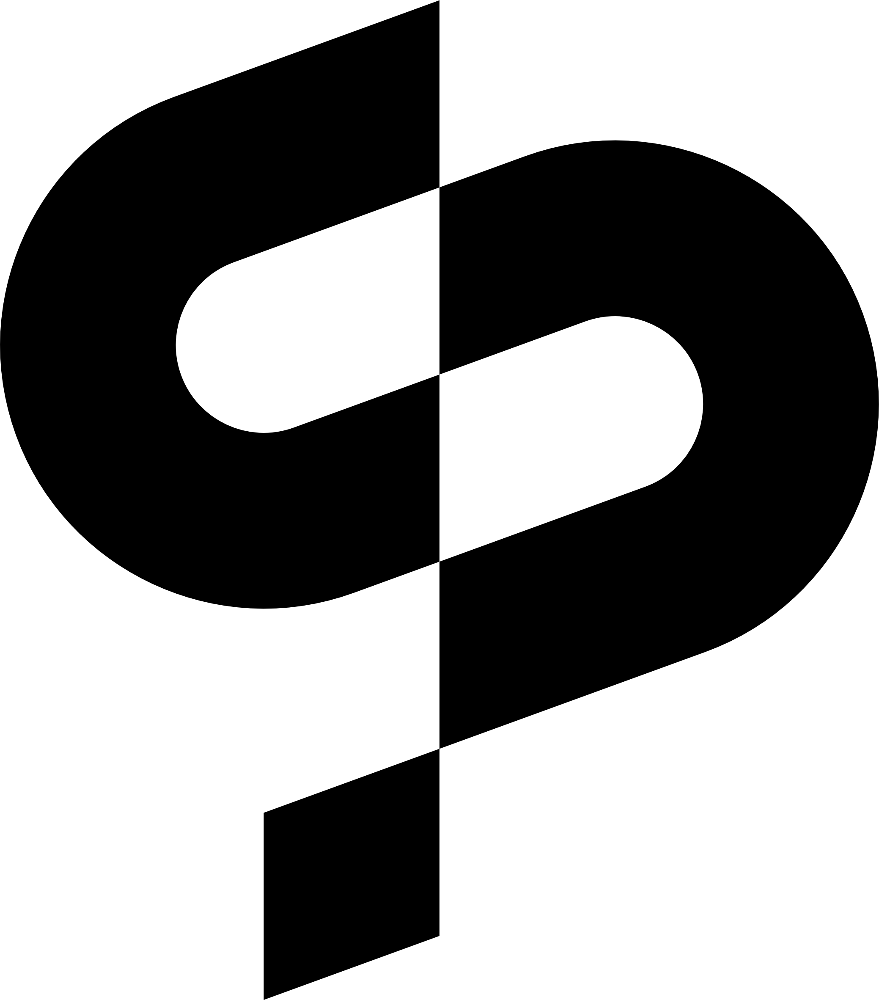

Cadrer le besoin
Échanger avec vos équipes, comprendre les usages et définir les contraintes, les interfaces et le périmètre du projet.

À propos
Un laboratoire créatif et une structure d’ingénierie technique pour le spectacle vivant et l’audiovisuel.
Le Pré-Saint-Gervais / France

L’approche
Playback Solutions réunit des compétences internes en recherche, développement logiciel et matériel, conception de systèmes et exploitation technique.
Nous collaborons avec les artistes et les équipes créatives, mais aussi avec les prestataires, productions et intégrateurs qui ont besoin d’une solution spécifique ou d’un partenaire technique complémentaire.
L’équipe & les collaborations
Notre équipe porte les compétences de conception et de développement en interne. Selon les besoins, nous mobilisons des freelances aux expertises complémentaires.
Nous pouvons accompagner un projet de la recherche à l’exploitation, ou intervenir sur une étape précise en coordination avec les équipes déjà en place.
A process you can rely on
Échanger avec vos équipes, comprendre les usages et définir les contraintes, les interfaces et le périmètre du projet.
Explorer, prototyper, construire et vérifier le fonctionnement de la solution dans son environnement technique.
Mettre en service, documenter et accompagner l’exploitation et la maintenance selon les besoins du projet.